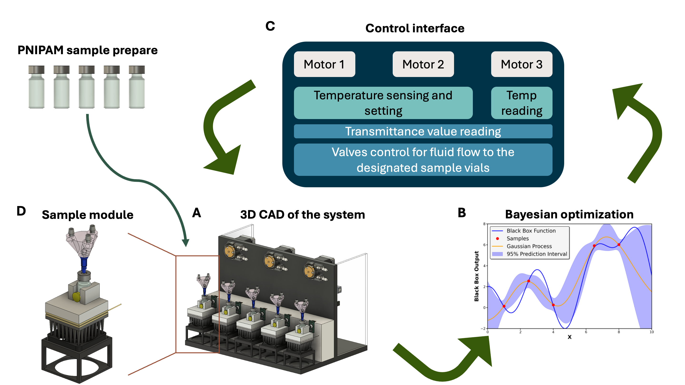
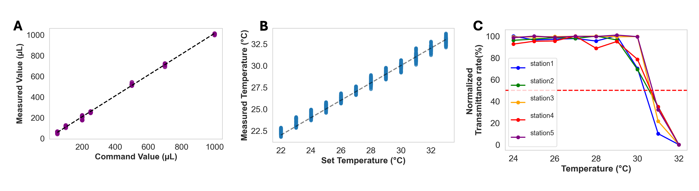
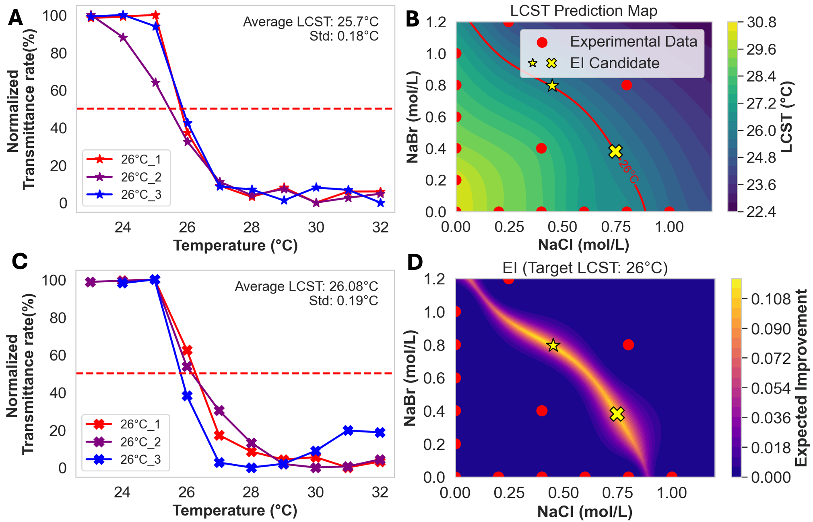
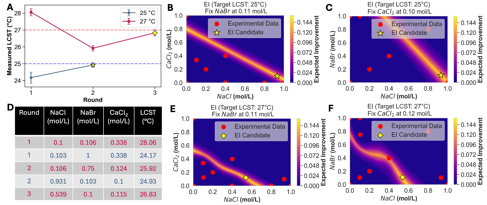
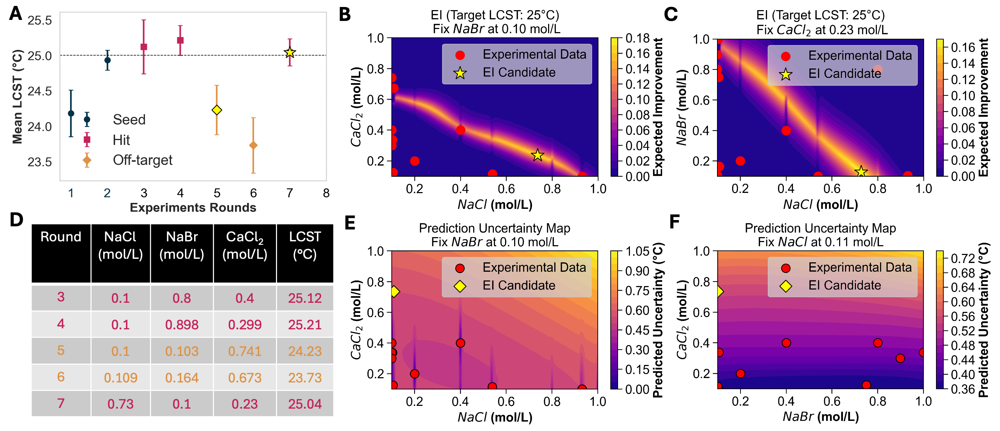

To overcome the inherent inefficiencies of traditional trial-and-error materials discovery, we developed an autonomous laboratory that integrates data-driven decision-making into closed-loop experimental workflows. Our "frugal twin" platform optimizes the Lower Critical Solution Temperature (LCST) of poly(N-isopropylacrylamide) (PNIPAM) through the integration of robotic fluid-handling, on-line sensors, and Bayesian optimization (BO) that navigates multi-component salt solution spaces to achieve user-specified LCST targets. The platform demonstrates convergence to target properties within minimal experiments, strategically exploring the parameter space, learning from informative "off-target" results, and self-correcting to achieve final targets. By providing an accessible and adaptable blueprint, this work lowers the barrier to entry for autonomous experimentation and accelerates the design and discovery of functional polymers.

Schematic of the Closed-Loop Autonomous Experimental Workflow. (A) The view of the complete system, showing the parallel array of five modules and the integrated fluid-handling capability. (B) BO model update and recommend the most promising conditions for the subsequent experiment (C) Through the graphical user interface (GUI), a user specifies the volume of each stock solution to be dispensed, allowing for the precise formulation of each sample's final composition (D) A detailed view of a single module highlights the key components: a multi-port sample holder, photodiode detector, a Peltier element for rapid heating and cooling, and a heat sink for thermal stability. This assembly enables automated, in-situ measurement of LCST by controlling both sample composition and temperature.Before launching autonomous optimisation campaigns, we verified that the hardware delivered accurate liquid handling, stable temperature control, and reproducible LCST measurements. Figure 2 summarises these tests.

Guided by a Gaussian-process surrogate and an expected-improvement acquisition function, the platform converged on a 26 °C LCST target for a NaCl–NaBr system within three experimental rounds (Figure 3).

| Round | NaCl (mol L-1) | NaBr (mol L-1) | Measured LCST (°C) |
|---|---|---|---|
| 1 | 0.247 | 1.2 | 24.55 ± 0.32 |
| 2 | 0.452 | 0.796 | 25.76 ± 0.12 |
| 3 | 0.748 | 0.380 | 26.08 ± 0.24 |
Extending to NaCl–NaBr–CaCl2 compositions increased the design dimensionality from 2 to 3. A composite kernel (linear + RBF + Matern) captured both global trends and local interactions, enabling rapid convergence to 25 °C and 27 °C LCST targets (Figure 4).

| Round | NaCl | NaBr | CaCl2 | Measured LCST (°C) |
|---|---|---|---|---|
| 1 | 0.300 | 0.300 | 0.050 | 28.06 ± 0.21 |
| 2 | 0.250 | 0.450 | 0.100 | 25.92 ± 0.16 |
| 3 | 0.275 | 0.400 | 0.075 | 26.83 ± 0.18 |
A final five-round campaign (Figure 5) demonstrated that the SDL can recover from exploratory “misses” and self-correct to hit the 25 °C target, underscoring the robustness of the exploration–exploitation strategy.

@misc{,
}